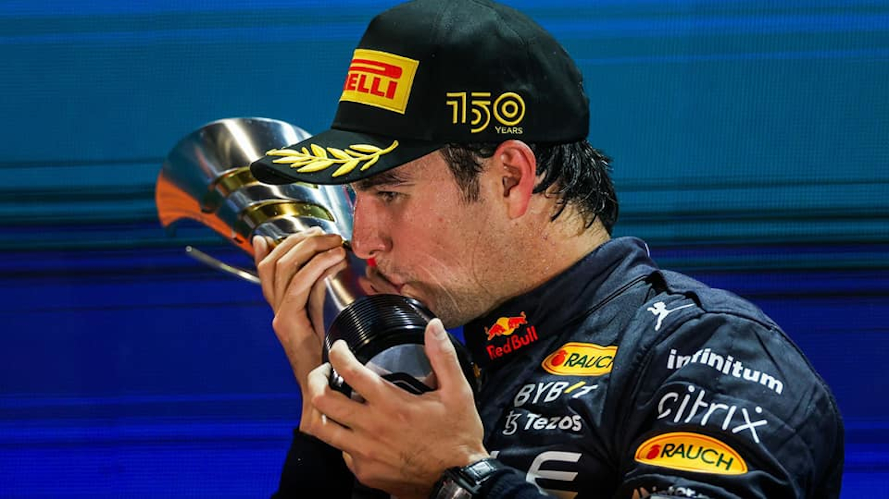

Sergio Pérez habla de su paso por Red Bull
Sergio Pérez habló sobre las dificultades que vivió durante su etapa en Red Bull, donde aseguró que el proyecto estaba completamente enfocado en Max Verstappen. El piloto mexicano explicó que cualquier resultado que obtenía generaba tensión dentro del equipo y que nunca fue sencillo ocupar ese asiento. Además, expresó su agradecimiento por la oportunidad y afirmó que la experiencia lo hizo más fuerte como piloto profesional dentro de la Fórmula 1. Entorno complicado: "Checo" señaló que, independientemente de ser más rápido o más lento que Verstappen, cualquier situación generaba problemas internos. Presión y Dudas: Mencionó que en sus últimos seis meses sintió mucha presión y llegó a pensar que él era el problema principal. Auto difícil: Aseguró que el auto era muy complejo de manejar y que todos los pilotos que lleguen allí enfrentarán los mismos desafíos. Reflexión final: Tras su salida, concluyó que dejar el equipo fue lo mejor que le pudo pasar y reafirmó que la estructura estaba centrada en Verstappen.